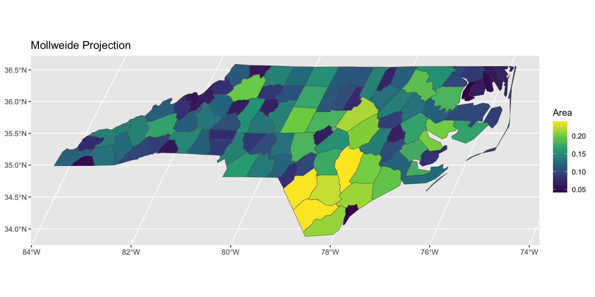

library(sf)Warning: package 'sf' was built under R version 4.5.2Linking to GEOS 3.13.0, GDAL 3.8.5, PROJ 9.5.1; sf_use_s2() is TRUE6 October, 2026


c(2.34,48.85) in WGS84
c(600256.4, 127726.4) in NTF Lambert North FranceSame city, two totally different-looking numbers. Neither is “wrong” — but you cannot add, subtract, or compute distances across the two without transforming first.
Figure from Geocomputation with R. Geocentric and local geodetic datums shown on top of a geoid (in false color and the vertical exaggeration by 10,000 scale factor). Image of the geoid is adapted from the work of Ince et al. (2019)
geometry column.data.frame.plot(nc[,"AREA"]) # plot feature "AREA" (i.e. column 1)ggplot2 — this is our first choropleth, a map shaded by a variable value.library(ggplot2)
ggplot(nc) + geom_sf(aes(fill = AREA)) +
scale_fill_viridis_c(name = "Area")Verification check: does AREA here have sensible units? North Carolina is roughly 139,000 km². Look at range(nc$AREA) — if the numbers don’t come close to plausible, something about the units or CRS is off before you even get to the transform step.
Ask your agent:
“Take the
ncsf object and reproject it to the Mollweide projection (+proj=moll). Plot both the original and reprojectedAREAchoropleth side by side.”
Then verify:
st_transform(), not just relabel the CRS with st_set_crs()? (The latter is the classic silent bug — it changes the label, not the coordinates.)st_crs(nc) before and after — did it actually change?library(dplyr)
ggplot(nc) + geom_sf(aes(fill = AREA)) +
scale_fill_viridis_c(name = "Area")
nc |>
st_transform("+proj=moll") |>
ggplot() + geom_sf(aes(fill = AREA)) +
scale_fill_viridis_c(name = "Area") +
ggtitle("Mollweide Projection")
## Make sure they have the same projection
seine = st_transform(seine, crs = st_crs(france))
pseine = ggplot() +
geom_sf(data = france, alpha = 0.8, fill = "black", col = "gray50") +
geom_sf(data = seine, col = "#05E9FF", lwd = 1) +
labs(title = "Administrative regions of France",
subtitle = "Also showing the Seine, Marne and Yonne rivers")pl4 = st_join(france, seine) |>
## Get rid of regions with no overlap
dplyr::filter(!is.na(name)) |>
## Some regions are duplicated b/c two
## branches of the river network flow through them
dplyr::distinct(ID, .keep_all = TRUE) |>
ggplot() +
geom_sf(alpha = 0.5, fill = "#01731f", col = "#fcb4b3", linewidth = 0.5) +
geom_sf(data = seine, col = "#05E9FF", lwd = 1) +
labs(title = "Intersected regions only") +
theme_bw()Modifying the join from before, ask your agent to produce two plots:


Desired outputs
Then verify the printed distance against an independent source (e.g. a quick search for the two départements’ préfectures and a rough map-ruler estimate) before you trust it.